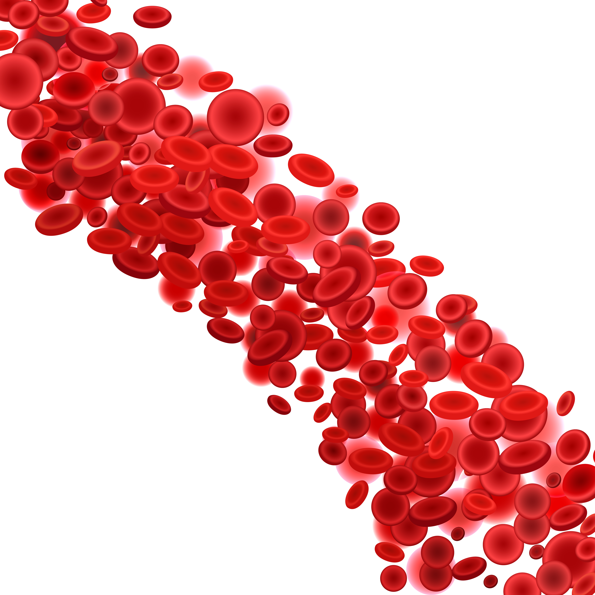

Diabetes, Hypertension and Cholesterol
Non-communicable disease is one of the leading causes of death in the world with a total of 70% or as many as 43 million deaths. The causes of death include heart disease, stroke and diabetes mellitus. The disease has a relationship between its causes, namely related to cholesterol, sugar levels and hypertension. High cholesterol levels c an lead to high sugar and blood pressure levels.
In addition, the absence of a tool that is able to detect this condition simultaneously and a reliable tool causes this mortality factor to be high due to this. Based on these conditions, my team and I created a project entitled "WHESMODE (Whole Detection in Single Mobile Device) as a Non-Invasive Detection of Diabetes, Hypertension and Cholesterol".
This study uses a signal from a non-invasive photoplethysmograph sensor because it uses infrared light. Then the signal results are processed and used as input to the Extreme Learning Machine (ELM) algorithm to classify whether the patient has these three conditions. The overall accuracy is 89%. This project then received an award in the form of funding from the ministry of education and culture in 2020 in a student scientific work week event.